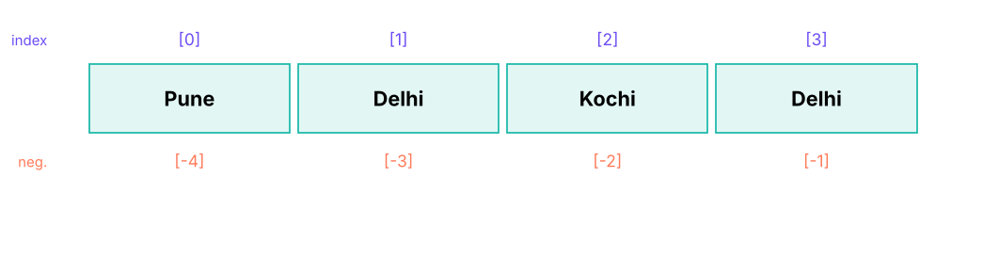
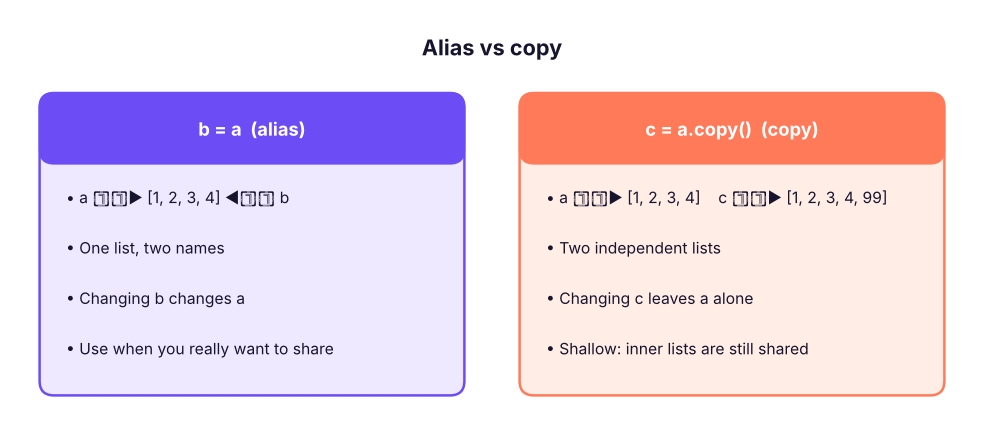

Lists: Creating, Slicing, Methods, Sorting & Comprehensions
Store and process ordered collections with lists. Index and slice them, add, remove and sort items, understand mutability, aliasing and copying (shallow vs deep), use nested lists, list comprehensions, and common patterns for cleaning and summarising data.
- Create lists and use indexing, slicing, concatenation, repetition and membership tests
- Apply list methods (append, extend, insert, remove, pop, sort, reverse, index, count) and built-ins (len, sum, min, max, sorted)
- Explain mutability, aliasing and the difference between assignment, shallow copy and deep copy
- Build lists with comprehensions, including conditions and nested loops
- Use lists for typical data tasks: filtering, ranking, de-duplicating while keeping order, flattening and unzipping
What is a list?
A list is an ordered, mutable collection of items written in square brackets. Items can be of any type, and may repeat.
cities = ["Pune", "Delhi", "Kochi", "Delhi"]
mixed = [101, "Kavya", 97000.5, True, None]
empty = []
print(cities, len(cities), type(cities).__name__)
print(list("data"), list(range(5)), list((1, 2, 3)), [0] * 5)['Pune', 'Delhi', 'Kochi', 'Delhi'] 4 list ['d', 'a', 't', 'a'] [0, 1, 2, 3, 4] [1, 2, 3] [0, 0, 0, 0, 0]

Indexing and slicing
Works exactly like strings (Lesson 3), but lists can also be changed.
nums = [10, 20, 30, 40, 50, 60]
print(nums[0], nums[-1], nums[1:4], nums[:2], nums[-2:], nums[::2], nums[::-1])
nums[0] = 99 # change one item
nums[1:3] = [21, 31, 32] # replace a slice (the length may change)
print(nums)
print(3 in nums, 99 in nums, nums.count(40), nums.index(40))10 60 [20, 30, 40] [10, 20] [50, 60] [10, 30, 50] [60, 50, 40, 30, 20, 10] [99, 21, 31, 32, 40, 50, 60] False True 1 4
Adding and removing items
| Method | What it does | Example | Returns |
|---|---|---|---|
append(x) |
Add one item at the end | a.append(5) |
None |
extend(iterable) or += |
Add all items from another sequence | a.extend([6, 7]) |
None |
insert(i, x) |
Insert before position i | a.insert(0, "first") |
None |
remove(x) |
Delete the first item equal to x | a.remove(5) |
None (error if missing) |
pop(i=-1) |
Remove and return item at i | last = a.pop() |
the item |
del a[i] / del a[i:j] |
Delete by position or slice | del a[0] |
|
clear() |
Empty the list | a.clear() |
None |
a = [1, 2, 3]
a.append(4); a.extend([5, 6]); a.insert(0, 0); a += [7]
print(a)
print(a.pop(), a.pop(0), a) # removes 7, then 0
a.remove(3); del a[0]; print(a)
print([1, 2] + [3], [1, 2] * 2) # concatenation creates new lists
print(a.append(9)) # None! methods that change a list return None[0, 1, 2, 3, 4, 5, 6, 7] 7 0 [1, 2, 3, 4, 5, 6] [2, 4, 5, 6] [1, 2, 3] [1, 2, 1, 2] None
append, sort, reverse and extend change the list in place and return None. Writing nums = nums.sort() leaves nums as None. Use sorted(nums) when you want a new list.
Sorting and reversing
scores = [72, 95, 61, 88, 95]
print(sorted(scores), sorted(scores, reverse=True), scores) # sorted() returns a new list
scores.sort(); print(scores) # .sort() changes the list in place
words = ["banana", "Apple", "cherry", "apple"]
print(sorted(words), sorted(words, key=str.lower), sorted(words, key=len))
staff = [("Asha", 29, 61000), ("Ravi", 34, 88000), ("Meera", 41, 72000)]
print(sorted(staff, key=lambda p: p[2], reverse=True)) # sort records by the 3rd field
print(list(reversed([1, 2, 3])), min(staff, key=lambda p: p[1])[0])[61, 72, 88, 95, 95] [95, 95, 88, 72, 61] [72, 95, 61, 88, 95]
[61, 72, 88, 95, 95]
['Apple', 'apple', 'banana', 'cherry'] ['Apple', 'apple', 'banana', 'cherry'] ['Apple', 'apple', 'banana', 'cherry']
[('Ravi', 34, 88000), ('Meera', 41, 72000), ('Asha', 29, 61000)]
[3, 2, 1] Ashasorted() and .sort() are stable: equal items keep their original order, so you can sort by several keys by sorting repeatedly from the least to the most important key, or use a tuple key: key=lambda p: (p[1], -p[2]).
Built-in helpers
data = [4, 8, 15, 16, 23, 42]
print(len(data), sum(data), min(data), max(data), sum(data) / len(data))
print(any(x > 40 for x in data), all(x > 0 for x in data))
print(list(enumerate(["a", "b"], 1)), list(zip([1, 2, 3], "abc")))
a, b, *rest = data; print(a, b, rest) # unpacking with *
first, *middle, last = data; print(first, middle, last)6 108 4 42 18.0 True True [(1, 'a'), (2, 'b')] [(1, 'a'), (2, 'b'), (3, 'c')] 4 8 [15, 16, 23, 42] 4 [8, 15, 16, 23] 42
Mutability, aliasing and copying
A variable holds a reference to a list. Assigning a list to another name does not copy it.
a = [1, 2, 3]
b = a # b is another name for the SAME list
b.append(4)
print(a, b, a is b)
c = a.copy() # a real (shallow) copy; also list(a) or a[:]
c.append(99)
print(a, c, a is c)[1, 2, 3, 4] [1, 2, 3, 4] True [1, 2, 3, 4] [1, 2, 3, 4, 99] False

import copy
grid = [[1, 2], [3, 4]]
shallow = grid.copy(); deep = copy.deepcopy(grid)
grid[0][0] = 100
print(shallow, deep) # shallow copy sees the change in the inner list; deep copy does not[[100, 2], [3, 4]] [[1, 2], [3, 4]]
[[0] * 3] * 3 creates three references to the same inner list; changing one row changes all. Build grids with a comprehension: [[0] * 3 for _ in range(3)]. Never use a list as a default function argument (def f(x, items=[])): use None and create the list inside (Lesson 9).
Nested lists
matrix = [[1, 2, 3], [4, 5, 6], [7, 8, 9]]
print(matrix[1][2], [row[0] for row in matrix], [sum(row) for row in matrix])
print([list(col) for col in zip(*matrix)]) # transpose
flat = [x for row in matrix for x in row]; print(flat) # flatten6 [1, 4, 7] [6, 15, 24] [[1, 4, 7], [2, 5, 8], [3, 6, 9]] [1, 2, 3, 4, 5, 6, 7, 8, 9]
List comprehensions
A comprehension builds a list in one readable line: [expression for item in iterable if condition].
squares = [n ** 2 for n in range(1, 8)]
evens = [n for n in range(20) if n % 2 == 0]
upper = [c.upper() for c in ["pune", "delhi"]]
labels = ["High" if s >= 80 else "Low" for s in [95, 60, 82]]
pairs = [(i, j) for i in range(1, 4) for j in range(i, 4)]
print(squares, evens, upper, labels, pairs, sep="\n")[1, 4, 9, 16, 25, 36, 49] [0, 2, 4, 6, 8, 10, 12, 14, 16, 18] ['PUNE', 'DELHI'] ['High', 'Low', 'High'] [(1, 1), (1, 2), (1, 3), (2, 2), (2, 3), (3, 3)]
Compare with the loop version:
result = []
for n in range(20):
if n % 2 == 0:
result.append(n)
print(result == [n for n in range(20) if n % 2 == 0])True
Use comprehensions for simple transformations and filters; switch to a loop when the logic needs several statements. For very large data use generators (Lesson 10) or pandas.
Data tasks with lists
import pandas as pd
emp = pd.read_csv("employees_small.csv")
salaries = emp.salary.tolist(); names = emp.name.tolist(); depts = emp.department.tolist()
top3 = sorted(zip(salaries, names), reverse=True)[:3]
print("Top 3:", [(n, s) for s, n in top3])
fin = [s for s, d in zip(salaries, depts) if d == "Finance"]
print("Finance:", len(fin), "people, average", round(sum(fin) / len(fin)))
above_avg = [n for n, s in zip(names, salaries) if s > sum(salaries) / len(salaries)]
print(len(above_avg), "people earn above the average;", above_avg[:3], "…")Top 3: [('Vivaan Gupta', 157000), ('Imran Reddy', 157000), ('Krishna Khan', 156000)]
Finance: 7 people, average 95714
9 people earn above the average; ['Imran Reddy', 'Harpreet Kulkarni', 'Simran Iyer'] …# Remove duplicates but keep the original order (set() would lose the order)
raw = ["Pune", "Delhi", "Pune", "Kochi", "Delhi", "Goa"]
seen, unique = set(), []
for c in raw:
if c not in seen: seen.add(c); unique.append(c)
print(unique, "| shortcut:", list(dict.fromkeys(raw)))
# Chunk a list into groups of 4
ids = list(range(1, 11)); print([ids[i:i + 4] for i in range(0, len(ids), 4)])
# Moving average of 3
x = [10, 12, 9, 14, 15, 13]; print([round(sum(x[i:i + 3]) / 3, 1) for i in range(len(x) - 2)])['Pune', 'Delhi', 'Kochi', 'Goa'] | shortcut: ['Pune', 'Delhi', 'Kochi', 'Goa'] [[1, 2, 3, 4], [5, 6, 7, 8], [9, 10]] [10.3, 11.7, 12.7, 14.0]
Performance notes
| Operation | Cost |
|---|---|
a[i], a.append(x), a.pop() |
O(1) |
x in a, a.index(x), a.remove(x), a.insert(0, x) |
O(n) |
a.sort() |
O(n log n) |
For many membership tests use a set (O(1)); for a queue use collections.deque. (More in the DSA lessons.)
Summary
- A list is an ordered, mutable collection; index and slice like strings; negative indexes count from the end.
append,extend,insert,remove,pop,sort,reversechange the list in place and returnNone;sorted()andreversed()give new objects.b = ais an alias; usea.copy()(shallow) orcopy.deepcopy(a)for independent copies; build grids with comprehensions.- Sort records with
key=(and tuple keys); sorting is stable. - Comprehensions
[f(x) for x in xs if cond]create lists concisely; unpack witha, *rest = items. - Membership tests on lists are O(n): use sets for lookups.
1. What does [1, 2, 3].append(4) return?
2. After b = a; b.append(1), what is true?
3. What does [x * 2 for x in range(5) if x % 2 == 0] return?
4. How do you sort a list of tuples by the second element, descending?
5. Why does grid = [[0] * 3] * 3; grid[0][0] = 1 change every row?
[[0] * 3 for _ in range(3)].6. Which is the fastest way to test if an item is in a large collection many times?
(1) From [3, 8, 1, 9, 4, 8] return the second-largest distinct value. (2) Remove duplicates from ["b","a","b","c","a"] keeping order. (3) Flatten [[1,2],[3],[4,5,6]]. (4) Given names and salaries lists, print "name: salary" sorted by salary descending. (5) Rotate [1,2,3,4,5] by 2 positions to the right.
Show solution
print(sorted(set([3, 8, 1, 9, 4, 8]))[-2]) # 8
print(list(dict.fromkeys(["b", "a", "b", "c", "a"]))) # ['b', 'a', 'c']
print([x for sub in [[1, 2], [3], [4, 5, 6]] for x in sub]) # [1, 2, 3, 4, 5, 6]
names, sal = ["A", "B", "C"], [50, 90, 70]
for n, s in sorted(zip(names, sal), key=lambda p: -p[1]): print(f"{n}: {s}")
r = [1, 2, 3, 4, 5]; print(r[-2:] + r[:-2]) # [4, 5, 1, 2, 3]Q: Difference between a list and a tuple? Lists are mutable, tuples immutable (hashable if their items are); tuples are used for fixed records and as dictionary keys, lists for collections that change.
Q: Shallow vs deep copy? A shallow copy duplicates the outer list but shares inner objects; a deep copy recursively copies everything.
Q: What is the time complexity of x in list vs x in set?
O(n) vs O(1) average.
Q: How do you reverse a list in place?
lst.reverse() or lst[:] = lst[::-1]; lst[::-1] creates a reversed copy.
Practise more online
Free, trusted places to test yourself on this topic. Links open the original site in a new tab.